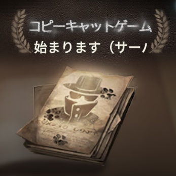

コピーキャットモード攻略
10人で対戦する特別モード。人狼ゲームのような推理と駆け引きを楽しめます。
📌 2026.2.12 新身分追加
- ライトキーパー（探偵団）、評論家（探偵団）、指揮者（模倣者）、監督（謎の来客）
📌 2025.7.17 新身分追加
- 薬剤師（探偵団）、レンジャー（探偵団）、処刑人（模倣者）、降霊術師（謎の来客）
📌 2025.4.3 新身分追加
- 密偵、ブローカー、闇医者、顧問
ゲーム基本情報
プレイ時間と構成
🕐 通常マッチ
プレイ時間：
9:00〜13:00 / 15:00〜20:00
/ 21:00〜25:00
構成：
探偵陣営6人 / 模倣者陣営2人 /
謎の来客陣営2人
⚙️ カスタムマッチ
プレイ時間：
いつでも可能（最低7人必要）
構成：
各陣営の人数は調整可能
勝利条件
🔍 探偵陣営
演繹要求を合計45個達成、または模倣者を全員脱落させる
🎭 模倣者陣営
模倣者の数が探偵陣営の数以上になる
❓ 謎の来客陣営
各役職固有の勝利条件を達成（最優先勝利）
ゲームの流れ
- 探偵陣営：マップ上の演繹要求を達成
- 模倣者陣営：探偵を襲撃
- 謎の来客陣営：自身の勝利条件達成を目指す
- 緊急会議：投票で最多票のプレイヤーが脱落
役職一覧
- 探偵：他プレイヤーの陣営を調査
- 哨兵：殺害されると犯人を強制通報
- 保安官：攻撃可能。ただし探偵陣営を攻撃すると自滅
- 狩人：一度だけ他プレイヤーを殺害可能
- 香料師：プレイヤーを香りで追跡
- 鍵職人：隠し通路の使用・封鎖が可能
- バンカー：投票時に票を2倍に
- 修道士：周囲のプレイヤーを強調表示
- 議員：殺害されると全員に通知
- ボクサー：警戒状態中に攻撃をカウンター
- 密偵：模倣者陣営を妨害し、重要な情報を獲得
- ブローカー：模倣者は2人きりの時だけ脱落させることが可能
- 薬剤師：他の演繹者に薬を渡すことができる。薬を渡された演繹者はその行動段階中は脱落しないが、もう一度薬を渡されると脱落。行動段階で薬剤を渡された演繹者は、その段階で薬剤師が脱落すると同時に脱落
- レンジャー：任意の位置に猟犬の幽霊を設置でき、いつでも猟犬の幽霊と視野を交換可能
- ライトキーパー：ライトキーパーはスキルを使用することで現在生存している演繹者の位置を確認できる。
- 評論家NEW：評論家は会議中に投じられた投票数を蓄積できる。被投票数が一定に達する度、他の演繹者を脱落させる能力を1回得る。
- 大泥棒：一定時間透明化
- 百面相：他のプレイヤーに変身
- 怪盗：他プレイヤーと位置を入れ替え
- 策略家：会議中に他プレイヤーの役職を当てて殺害（失敗で自滅）
- 花火師：他プレイヤーに花火を渡して爆破
- 闇医者：自分が残した脱落痕跡を揉み消すことが可能
- 処刑人：模倣者陣営の残りメンバーが自分だけになった時、追加で他人を脱落させる能力を得る。この追加能力は本来の脱落能力とは別でクールタイムが計算される
-
指揮者NEW：指揮者は任意のエリアに円形ステージを設置できる。舞台範囲内にいる他陣営の演繹者は混乱状態に陥り、範囲外へ出ると効果は解除される。
混乱状態効果：演繹者の視界がぼやけ、視認する他の演繹者のモデルと番号が乱れ、指揮者が奏でる楽曲しか聞こえなくなる。
勝利目標：他の陣営のメンバーを脱落させることで大多数の投票権を占有するか、他の演繹者が突発事件-バルブを閉じるを達成できなかった場合、勝利となる。
- 流浪者：他プレイヤーを汚染し全員汚染で勝利
- 愚者：投票で追放されると勝利
- 配達員：プレイヤーを箱詰めし全員監禁で勝利
- 指し手：役職を4回連続で正しく推理すると勝利
- 顧問：他のプレイヤーを1回脱落させることが可能
- 降霊術師：脱落すると直接脱落とならず、会議終了後に霊魂状態になる。霊魂状態ではスキルを使用することで他の演繹者から視認されず、追撃者から逃れることが可能
-
監督NEW：監督は全ての模倣者が脱落するまで、他の演繹者を脱落させる能力を得られない。監督は会議段階中にゲームフィールドに戻り、ヒントに応じて対応する身分の演繹者の映像を脱落させることができる。脱落対象が正しければ、その演繹者は実際に脱落する。脱落対象が間違っていた場合、監督は今回の会議でゲームフィールドに戻れなくなる。監督が会議段階で他の演繹者を2回脱落させるか、生存している模倣者がいなくなり、残り演繹者の数が3以下になると、「エンディング」に突入する。
エンディング：65/75秒間持続し、この期間中は会議を開始できない。監督は姿を隠し、移動速度が上昇するとともに、クールタイムなしで脱落能力を使用可能になる。エンディング終了時に監督以外の演繹者が生存していれば、監督が脱落となる。
勝利のカギ
緊急会議での立ち振る舞いが勝敗を分けます。
🔍 探偵陣営の戦略
模倣者を見つけて追放し、謎の来客の勝利条件を妨害することが重要です。情報を共有し、論理的な推理で真実を見抜きましょう。
🎭 模倣者陣営の戦略
自分の正体を隠しつつ攪乱する心理戦がカギです。探偵陣営を装い、疑いを他のプレイヤーに向けることで生き残りましょう。
❓ 謎の来客陣営の戦略
勝利条件に応じた柔軟かつ隠密な行動が必要です。どちらの陣営にも味方せず、自分の目的だけを追求しましょう。
最後に
探偵陣営には「模索力」、模倣者陣営には「攪乱と心理戦」、謎の来客陣営には「隠密行動」など、陣営ごとに求められるスキルが異なります。
誰を信じるか、どこで疑うか、どんな演技をするか……
駆け引きの連続で緊張感あふれるこの新モードを、ぜひプレイして騙し合いのスリルを味わってください！
みんなのコメント